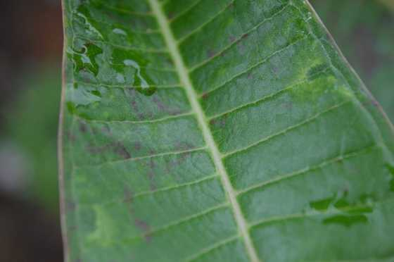
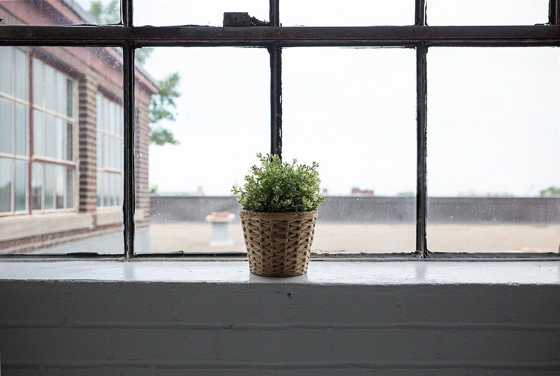

香川県さぬき市志度・母娘のベーグル店
雨がやんだあとの、
ほっとする時間に。
もっちり、しっとりのベーグルと、ゆったりくつろげるカフェ。母娘で営む「あめあがり」です。
お店のこと
趣味のベーグルが、待望の実店舗に。
紹介記事によると、あめあがりは母と娘のふたりで営むベーグル店です。2023年ごろから趣味のベーグルづくりが販売につながり、イベント販売や間借り販売を重ねたのち、2025年4月に志度で実店舗をオープンしました。
ベーグルは娘さんがレシピを考案。水分量の多い生地で、もっちりしっとりした食感が特徴とされています。具材やおかずは母が手づくりし、ベーグルのおいしさを引き立てます。「ゆったりくつろいでほしい」という想いから、カフェスペースも設けられています。
情報源: NICE TOWN/さぬき市再発見ラジオ あそびの達人/Instagram
店名の由来は確認できていません。「雨上がり」の言葉から、雨がやんだあとの澄んだ空気をイメージして、このページの見出し・配色を作りました(制作側のイメージです)。





メニュー
ベーグルと、ベーグルのランチ。
掲載の写真はフリー素材のイメージです。お店の商品そのものではありません。
価格・営業日・予約方法は変更されることがあるため、掲載せず「準備中」としています。最新情報はInstagramをご確認ください。


口コミ
こんな声が届きそうです
イメージ例
しっとりもちもちで、噛むほどに小麦の味がします。手づくりの具材との組み合わせが楽しみです。
ご来店のお客様(創作)
イメージ例
雨上がりの午後に寄りたくなる、静かで落ち着く場所。ゆっくり過ごせました。
ご来店のお客様(創作)
イメージ例
ランチのあとにベーグルを買って帰るのが、ささやかな楽しみになりました。
ご来店のお客様(創作)
上記は制作側が作成したイメージ例で、実在のお客様の声ではありません。